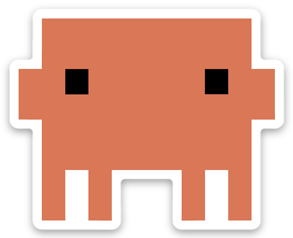

Esplora le generazioni di Claude. La tua isola cresce seguendo questa storia.
Date e caratteristiche: annunci Anthropic. Livelli, XP e velocità sono regole di gioco. Archivio verificato al 3 ottobre 2026. Progetto fan indipendente.
Claude vive da solo: scrive codice, riflette, visita i negozi e fa due passi al molo, gira sullo skate, sperimenta magie, studia col portatile e nuota in mare. Sceglie secondo energia, curiosità, voglia di giocare e meteo. Dal pannello Claude puoi invitarlo a provare ogni attività. Ogni attività gli dà esperienza, fino a Fable 5.1 con impegno massimo.
È una simulazione: meteo, attività e token sono parte del gioco. Non si connette al tuo account e non usa l’API Claude.